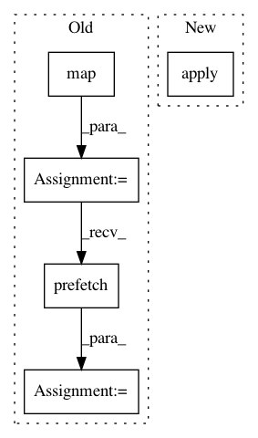

dcbb03bc8454537b7f79955ec4dbbeb2c51afe74,scripts/tf_cnn_benchmarks/ssd_dataloader.py,SSDInputReader,__call__,#SSDInputReader#Any#,265
Before Change
// TODO(taylorrobie): Confirm that this is MLPerf rules compliant.
dataset = dataset.filter(
lambda data: tf.greater(tf.shape(data["groundtruth_boxes"])[0], 0))
dataset = dataset.map(_parse_example, num_parallel_calls=64)
dataset = dataset.prefetch(batch_size)
dataset = dataset.batch(batch_size, drop_remainder=True)
dataset = dataset.prefetch(tf.contrib.data.AUTOTUNE)
return dataset
After Change
// TODO(taylorrobie): Confirm that this is MLPerf rules compliant.
dataset = dataset.filter(
lambda data: tf.greater(tf.shape(data["groundtruth_boxes"])[0], 0))
dataset = dataset.apply(batching.map_and_batch(
map_func=_parse_example,
batch_size=batch_size_per_split,
num_parallel_batches=num_splits,
drop_remainder=True))
dataset = dataset.prefetch(buffer_size=num_splits)
return dataset
In pattern: SUPERPATTERN
Frequency: 3
Non-data size: 5
Instances
Project Name: tensorflow/benchmarks
Commit Name: dcbb03bc8454537b7f79955ec4dbbeb2c51afe74
Time: 2018-09-11
Author: haoyuzhang@google.com
File Name: scripts/tf_cnn_benchmarks/ssd_dataloader.py
Class Name: SSDInputReader
Method Name: __call__
Project Name: tensorflow/tpu
Commit Name: 9de6656a779e73ac61995bd87044af21b3f37951
Time: 2018-04-19
Author: frankchn@google.com
File Name: models/experimental/amoeba_net/amoeba_net_model.py
Class Name: InputPipeline
Method Name: input_fn
Project Name: tensorflow/tpu
Commit Name: 7d209b46e2f6402e44c69f6fe00384aa14286b08
Time: 2018-03-22
Author: frankchn@google.com
File Name: models/experimental/resnet_bfloat16/imagenet_input.py
Class Name: ImageNetInput
Method Name: input_fn